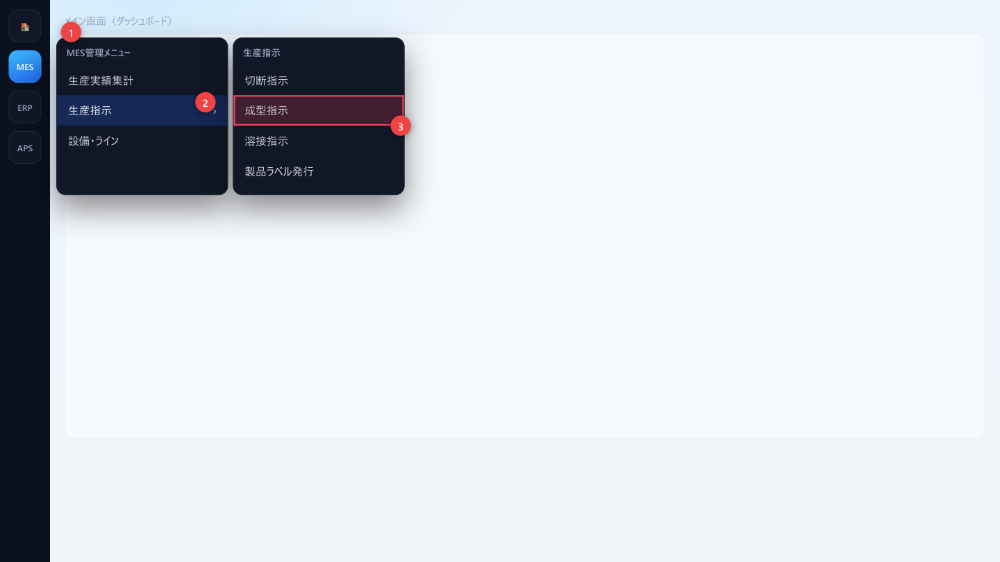
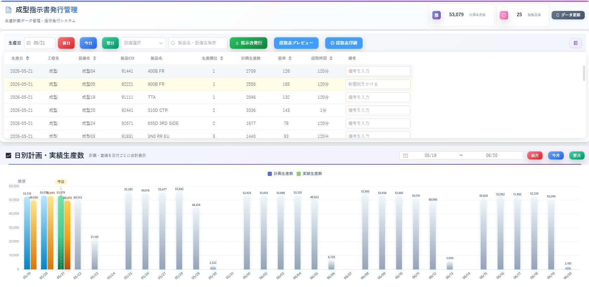
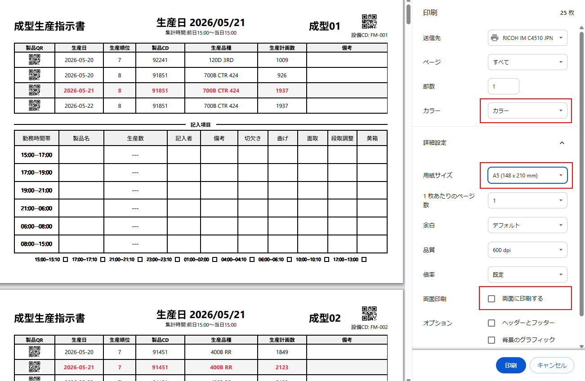
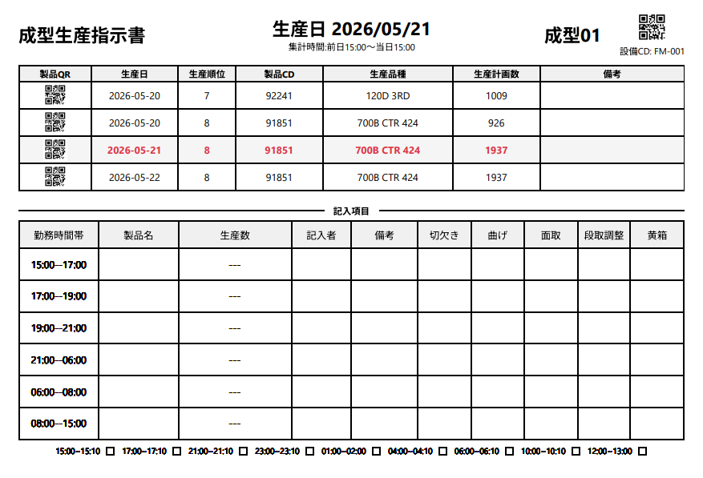
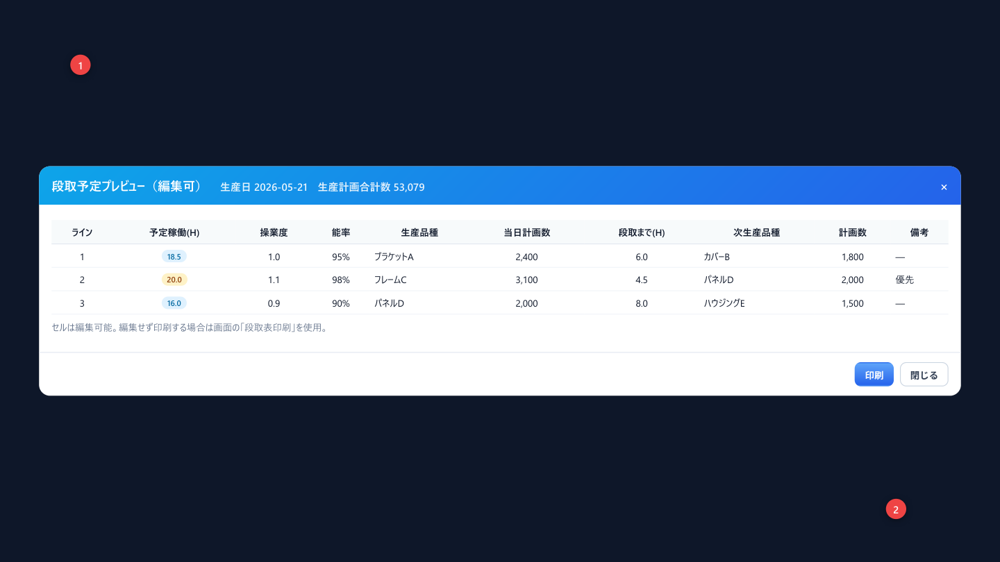
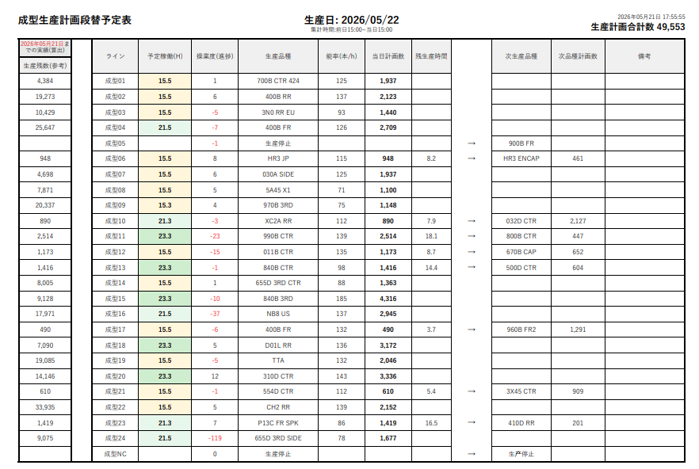
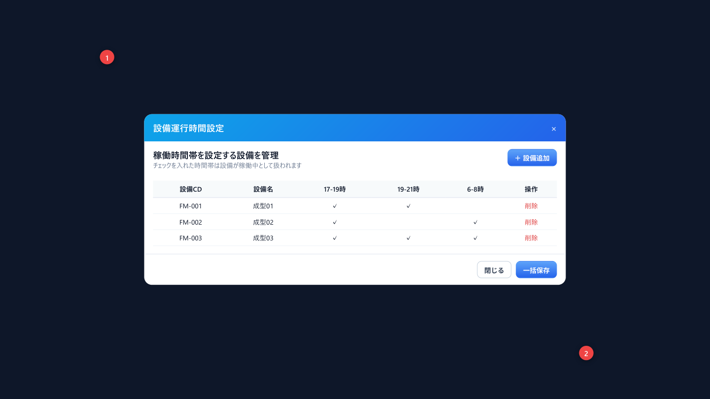
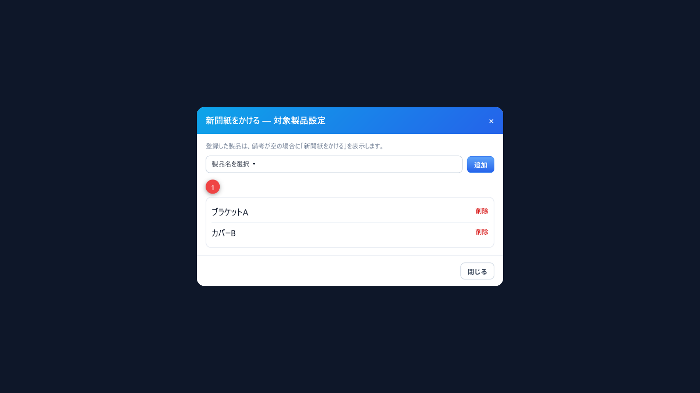
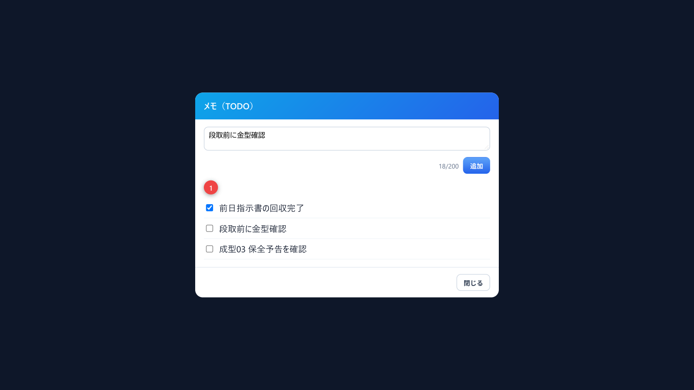

翌日分の成型生産指示書発行から、段取表・設備運行時間・備考設定までを一画面で
「成型指示書発行管理」は、成型工程の日次計画を確認し、設備ごとの生産指示書と段取表を発行する画面です。翌日分の指示書を印刷し、現場へ渡すまでの事務操作をここに集約します。
| できること | 説明 |
|---|---|
| 計画確認 | 生産日・設備・製品で絞り込み、能率・段取時間・備考・占用を一覧で見る |
| 指示書発行 | 有効な成型設備ごとに 1 ページの指示書を生成し、A5 横向き・カラーで印刷する |
| 段取表 | 編集可能なプレビューから印刷、または編集せずそのまま印刷する |
| 設定 | 設備運行時間帯、新聞紙をかける対象製品、メモ（TODO）を管理する |
| チャート | 日別の計画合計と実績合計を棒グラフで確認する |
| 用語 | 意味 |
|---|---|
| 生産日 | 指示・計画の対象日。指示書発行は原則「翌日」を選ぶ |
| 指示書 | 設備ごとの成型生産指示書。製品 QR、計画数、能率、段取、記入欄を含む |
| 段取表 | ライン別の当日／次日の品種・計画数・稼働時間などをまとめた掲示用表 |
| 占用 | 技術使用・保全など、稼働から差し引く時間帯。予告表示もある |
| 新聞紙をかける | 対象製品で備考が空のとき、指示書・一覧に自動表示する定型備考 |
| 能率／段取時間 | 計画上の能率（％）と段取に要する分。指示書にも印字される |

/mes/productionInstruction/forming です。
| No | エリア | 説明 |
|---|---|---|
| A | タイトル・サマリ | 画面名、計画生産数・稼働設備、データ更新、操作説明（?） |
| B | 検索・操作バー | 生産日、設備選択、キーワード、指示書発行・段取表・設定ボタン |
| C | 計画テーブル | 生産日・設備・製品・順位・計画数・能率・段取・備考・占用 |
| D | 日別チャート | 計画生産数と実績生産数の棒グラフ（期間・月切替） |
| No | ボタン | 動き | 参照 |
|---|---|---|---|
| 1 | データ更新 | 計画データを再取得 | 第 4 章 |
| 2 | 指示書発行 | 設備ごとの指示書を生成し印刷ダイアログを開く | 第 5 章 |
| 3 | 段取表プレビュー | 編集可能な段取表ダイアログを開く | 第 6 章 |
| 4 | 段取表印刷 | 編集せずそのまま印刷 | 第 6 章 |
| 5 | 設備運行時間設定 | 稼働時間帯の設定ダイアログ（表示時） | 第 7 章 |
| 6 | 新聞紙設定 | 「新聞紙をかける」対象製品の設定 | 第 8 章 |
| 7 | メモ | メモ（TODO）ダイアログ（件数バッジ付き） | 第 9 章 |


| 項目 | 説明 |
|---|---|
| 設備名・設備 CD・生産日 | ヘッダー。集計時間帯（例: 前日15:00〜当日15:00）も表示 |
| 製品 QR／製品 CD | 現場・HT 等での読取用 |
| 生産順位・計画数・備考 | 当日計画の明細。当日行は強調表示される場合あり |
| 記入項目 | 勤務時間帯・生産数・記入者・工程チェック欄（手書き用） |
| ボタン | 用途 |
|---|---|
| 段取表プレビュー | 編集可能な表を開き、操業度・品種・計画数などを直してから印刷 |
| 段取表印刷 | 編集せず、現在の計画データからそのまま印刷 |

| 窗体の主な列 | 説明 |
|---|---|
| ライン | 成型ライン番号 |
| 予定稼働(H) | 予定稼働時間。負荷に応じて色分け |
| 操業度 | 手入力可（小数 1 桁に整形） |
| 生産品種／当日計画数 | 当日の品種と数量（複数行可） |
| 段取まで(H) | 次段取までの時間目安 |
| 次生産品種・計画数 | 翌日以降（前日15時から）の列グループ |
| 備考 | 掲示用のメモ |

検索バーの 設備運行時間設定（表示されている場合）から、設備ごとの稼働時間帯を管理します。チェックした帯は稼働中として扱われます。

| 窗体項目 | 説明 |
|---|---|
| 設備CD／設備名 | 対象成型設備 |
| 17-19時 | 夕方帯の稼働 |
| 19-21時 | 夜帯の稼働 |
| 6-8時 | 早朝帯の稼働 |
| 設備追加ダイアログ | 設備コード選択（追加時）、時間帯チェック、保存／キャンセル |
新聞紙設定 で、「新聞紙をかける」を備考に自動表示する製品を管理します。

メモアイコン（未完了件数バッジ付き）から、画面固有の短い TODO を管理します。

| 窗体項目 | 説明 |
|---|---|
| 入力欄 | プレースホルダ「簡単なメモを入力（短文）」、文字数 n/200 |
| 追加 | 登録権限が必要。空だと「内容を入力してください」 |
| 完了チェック | 編集権限。済／未を切替 |
| 削除 | 削除権限 |
| 未登録 | 0 件のときの表示 |
画面下部の「日別計画・実績生産数」で、計画と実績を日付ごとに合計して棒グラフ表示します（図 3-1 の領域 D）。
ボタンが見えていても、製造実行の操作権限が無いと「製造実行の操作権限がありません」と出て処理は始まりません。
| 権限 | できる操作 |
|---|---|
| 参照 | 画面を開く、一覧・チャートの閲覧、データ更新 |
| 登録 | メモ追加、新聞紙製品の追加、運行時間の設備追加 など |
| 編集 | 備考保存、メモ完了切替、運行時間の一括保存 など |
| 削除 | メモ削除、新聞紙製品削除、運行時間設定の削除 |
| エクスポート | 指示書発行、段取表プレビュー／印刷 |
| メッセージ | 意味と対処 |
|---|---|
| 印刷対象の設備がありません | 対象日・絞り込みで印刷可能設備が 0。日付と設備選択を見直す |
| 印刷する計画データがありません | 段取表用の計画が無い。生産日と計画投入を確認 |
| QRコード読み込み中... | プレビュー準備中。完了後に印刷ダイアログが開く |
| 印刷に失敗しました／印刷の実行に失敗しました | ブラウザの印刷許可・プリンタ接続を確認して再実行 |
| 備考を保存しました | 備考の保存成功 |
| 備考の保存に失敗しました | 通信または権限。再入力して保存 |
| 計画データの読み込みに失敗しました | データ更新を押す。続くときはサーバ／権限を確認 |
| 製造実行の操作権限がありません | 登録・編集・削除・出力の権限が無い。管理者に依頼 |
| 製品名を選択してください | 新聞紙設定で未選択のまま追加した |
| この製品名は既に登録されています | 新聞紙対象の重複 |
| 内容を入力してください | メモが空 |
| 追加しました／削除しました | メモ・新聞紙・運行時間などの成功メッセージ |
| 質問 | 答え |
|---|---|
| 特定ラインだけ印刷できますか | 設備選択で絞ってから指示書発行します |
| 印刷ダイアログが出ません | プレビューの × で閉じていないか、ブラウザの印刷ブロックを確認します |
| 設備運行時間設定が見えません | 画面設定で非表示の場合があります。管理者に確認してください |
| チャートが空です | 期間内に計画・実績が無いときです。月や日付範囲を変えてください |
| 工程全体の手順はどこですか | マニュアル「成型工程 生産指示・実績収集」を開いてください |
| 項目 | 内容 |
|---|---|
| 文書名 | 成型指示書発行管理 操作説明書 |
| 対象 | MES → 生産指示 → 成型指示 |
| 画面パス | /mes/productionInstruction/forming |
| 版数 | 第 2.0 版 |
| 作成日 | 2026年10月12日 |
| スタイル正本 | 月受注管理 操作説明書（order-monthly.pdf）に準拠 |
| 言語 | 日本語 |
| 日付 | 版 | 内容 |
|---|---|---|
| 2026-10-12 | 2.0 | 月受注管理と同スタイルで全面改訂。実メニュー／実画面／各ダイアログ（指示書・段取表・運行時間・新聞紙・メモ）の図と詳細説明を追加 |
| 2026-10-12 | 1.0 | 初版（様式見直しのため 2.0 に置換） |
以上。ボタン名は 2026年10月12日時点の画面表示と一致します。現場交換・実績照合・APS 再計算は関連マニュアルに従ってください。